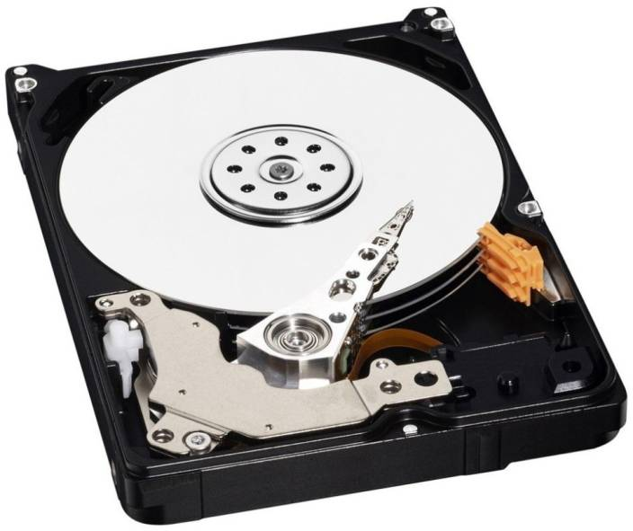

Welcome to our Website Guest
 Computer hardware concept(Part 2)
Computer hardware concept(Part 2)
Hard copy output:
It refers to recording letters , graphics or pictures on a permanent medium such as paper or film. The principal of hard copy output devices are printers and graphic plotters.
Printer:
Printer is a device that accepts text and graphics output from a computer and transfers the information to the paper usually to standard size sheets of paper. The output generated by a printer is often related as hard copy. Computer printers are commonly divided into 2 general classes according to the way they produce image on paper. They are:
Impact printer
Impact printer uses the electromechanical mechanism , that is physically striking the hammers to strike a character against an inked ribbon. Each hammer is embossed with the shape of alphanumeric character and is transferred through the inked ribbon onto the paper , resulting in a printed character . They are relatively slow , noisy and inexpensive.
- Dot matrix printer
- Daisy wheel printer
 It is the most popular impact printer. The print head contains a vertical array of pins.
As the print head moves across the paper , selected pins fire against the ribbon to form pattern in the paper
Dot-matrix printers are noisy, inexpensive, and they can print through multipart forms, creating several copies of a page at the same time,
It is the most popular impact printer. The print head contains a vertical array of pins.
As the print head moves across the paper , selected pins fire against the ribbon to form pattern in the paper
Dot-matrix printers are noisy, inexpensive, and they can print through multipart forms, creating several copies of a page at the same time,
 It is a type of impact printer that has raised letters and numbers arranged on the wheel.
The daisy wheel turns around until the correct letter is in position for a hammer to
strike it against an inked ribbon. It is noisy and quiet slow.However,daisy-wheel printers cannot print graphics.
It is a type of impact printer that has raised letters and numbers arranged on the wheel.
The daisy wheel turns around until the correct letter is in position for a hammer to
strike it against an inked ribbon. It is noisy and quiet slow.However,daisy-wheel printers cannot print graphics.Non-Impact printer
Non impact printer is a printer in which printing is done with ink jet ,electrostatic , chemical , laser beam and thermal technology. The quality of printing is very high. It is less noisy , faster , and produce high quality graphics
- Ink jet printer
- Laser printer
 It uses a continuous stream of ink drops to print characters on paper. It does not make a noise and can produce
a good printout of both graphics and text.Ink-jet printers spray small, electrically charged droplets of ink from
four nozzles through holes in a matrix at high speed onto paper.
It uses a continuous stream of ink drops to print characters on paper. It does not make a noise and can produce
a good printout of both graphics and text.Ink-jet printers spray small, electrically charged droplets of ink from
four nozzles through holes in a matrix at high speed onto paper.
 It use a light beam to form images on the paper , using toner ink as the medium. The output image is
written on a copier drum with the help of the light beam. It is quiet and produce high quality output but
it is very expensive.
It use a light beam to form images on the paper , using toner ink as the medium. The output image is
written on a copier drum with the help of the light beam. It is quiet and produce high quality output but
it is very expensive.
Speakers:
Speakers are the output device that are used to give the sound output. They are used to listen music and other sounds being played by the computer. Computer speakers range widely in quality and in price. The computer speakers typically packaged with computer systems are small , plastic and have moderate sound quality.
Secondary storage:
A secondary storage device refers to any volatile storage device that is internal or external to the computer. It can be any storage device beyond the primary storage that enables permanent data storage. A secondary storage device is also known as an auxiliary storage device or external storage.
Magnetic tape:

A sequential storage medium used for data collection, backup and archiving. Like videotape, computer tape is made of flexible plastic with one side coated with a ferromagnetic material. The major drawback of tape is its sequential format. Locating a specific record requires reading every record in front of it or searching for markers that identify predefined partitions. Although most tapes are used for archiving rather than routine updating, some drives allow rewriting in place if the byte count does not change. Otherwise, updating requires copying files from the original tape to a blank tape (scratch tape) and adding the new data in between.
Magnetic disk:
Magnetic disk is a thin , circular plate/platter made of metal or plastic , which is usually coated on both sides with a magnetizable recording material , such as iron oxide. Data are recorded on the tracks of a spinning disk surface , read from the surface by one or more read/write heads . These heads are fastened to an arm in a disk storage device so that they can be moved quickly and directly to any disk location to store or retrieve data. It offers high storage capacity , reliability and the capacity to directly access stored data.
Hard disk:
A hard disk is a storage device that stores data magnetically in platters. It contains a circuit board that translates information to the bus of a computer to be used and it is in a protective case so that the platters won't be affected by outside magnetism and acquire dust. It consists of one or more platters. Each platter is a thin , circular metal plate coated on both sides with a magnetic material. This platter is connected to a spindle. The spindle rotates the disk platter with different speed. There is an access arm having 2 read/write heads for each recording surface of the platter to read/write the data as the disk spins.
Floppy disk:

Floppy disk is a circular piece of thin plastic material with magnetic coating on one or both sides.
The plastic disk coated with magnetic material are permanently sealed in square jacket to protect them from
dust and scratches.It is called floppy because it flops if you wave it. Floppy disks are portable , because
you can remove them from a disk drive. Disk drives for floppy disks are called floppy drive. Floppy disk
is inserted in a Floppy disk drive until by pushing it through a slot. Once inside the disk drive , the
disk spins within its cover at 300 revolution per minute, and data is read and recorded by a read/write head. Floppy disk
has a write protect notch to protect it against being written on or to enable it to write. Floppies come in 3 basic sizes:
8-inch:The first floppy disk design invented by IBM in the late 1960s and used in early 1970s as
first a read only format and then as a read write format.
5-inch:The common size for PCs made before 1987 and the predecessor to the 8- inch floppy disk . This type of floppy is generally
capable of storing between 100K AND 1.2MB of data. The most common sizes are 360K and 1.2MB.
3-inch:The most common sizes for PCs are 720K and 1.44MB. Macintoshes support disks of 400K , 800K , and 1.2MB.
Floppy disk capacities:
Floppies can be found in different sizes with varying storage capacities. They must be formatted before they can be store information. Commonly used diskettes are referred to as either double density or high density.
| Size(inches) | 5.25 | 5.25 | 3.5 | 3.5 |
|---|---|---|---|---|
| Type | Double density | High density | Double density | High density |
| Capacity | 360K | 1.2M | 720K | 1.44M |
| Tracks | 40 | 80 | 80 | 80 |
| Sectors/Tracks | 9 | 15 | 9 | 18 |
| Heads | 2 | 2 | 2 | 2 |
| Rotations/min | 300 | 360 | 300 | 300 |
| Data rate(kbps) | 250 | 500 | 250 | 500 |
| Bytes/sector | 512 | 512 | 512 | 512 |
The disk capacity can be calculated by using the following formula:
Storage capacity = No. of bytes per sector x No. of sectors per track x No. of tracks x No. of sides
- Calculate the storage capacity of a 5.25" double sided double density disk. Solution
- Calculate the storage capacity of a 5.25" double sided high density disk Solution
- Calculate the storage capacity of a 3.5" double sided double density disk. Solution
- Calculate the storage capacity of a 3.5" double sided high density disk Solution
Storage capacity :
= No. of bytes per sector x No. of sectors per track x No. of tracks x No. of sides
=512x9x40x2
=368640 bytes
=360KB
Storage capacity :
= No. of bytes per sector x No. of sectors per track x No. of tracks x No. of sides
=512x15x80x2
=1228800 bytes
=1200KB
=1.2MB
Storage capacity :
= No. of bytes per sector x No. of sectors per track x No. of tracks x No. of sides
=512x9x80x2
=737280 bytes
=720KB
Storage capacity :
= No. of bytes per sector x No. of sectors per track x No. of tracks x No. of sides
=512x18x80x2
=1474560 bytes
=1440KB
=1.44MB
Handling floppy disk:
Floppies can be found in different sizes with varying storage capacities. They must be formatted before they can be used to store information. Commonly used diskettes are referred to as either double density or high density.
- Always hold disk by the label
- Always keep the disk in its envelope when you are not using it.
- Do not bend or crease the disk
- Always write the label before sticking it onto the disk
- Keep disk away from dust and liquids.
- Never touch the surface of the disk
Optical disk:
An optical disk is an electronic data storage medium that can be written to and read using a low-powered laser beam. Optical disc offers a number of advantages over magnetic storage media. An optical disc holds much more data. Storage capacity increases with each new generation of optical media. Emerging standards, such as Blu-ray, offer up to 27 gigabytes (GB) on a single-sided 12-centimeter disk. Optical discs are inexpensive to manufacture and data stored on them is relatively impervious to most environmental threats, such as power surges, or magnetic disturbances. The most widely used type of optical storage medium are CD-ROM , CD Rewritable ,CD-Recordable and DVD.
CD-ROM
CD -ROM disk is a rigid plastic disk covered with a layer of reflecting material such as aluminum . It stores a large amount of data through the use of laser optics technology and are popular for storing databases and multimedia materials. The most common format of CD-ROM holds approximately 700 megabyte of data.
DVD-ROM
DVD-ROM is an optical storage medium capable of storing computer data and a full length movie on single disk. It provides better graphics , greater resolution and increased storage capacity. A standard single layer , single sided DVD can store 4.7GB of data.DVD-ROM uses include interactive games , video file storage and photographic storage.
Blue-ray disk
Blue-ray is an optical disk format such as CD and DVD. It was developed for recording and playing high definition(HD) video for storing large amounts of data. While a CD can hold 700MB of data and a basic DVD can hold 4.7GB of data , a single Blu-ray disc can hold upto 25GB of data . Even a double sided dual layer DVD can only hold 17GB of data. Dual layer blu-ray discs will be able to store 50GB of data. This is equivalent to 4 hours of HDTV.
Motherboard:

The motherboard is the main circuit board in a computer that connects the different parts of computer together. It contains the primary components of computer system and provides the main computing capability. All the components such as the processor , graphics card , memory modules and so on , connect to the motherboard . An important feature of motherboard is the socket used to house the CPU. The motherboard is also called Printed Circuit Board(PCB).
Expansion slots:

Expansion slots is a slot or socket where a circuit board can be inserted into the motherboard. Most personal computers have form 3 to 8 expansion slots. Expansion slots provide a means od adding new devices or capabilities to the computer such as higher quality sound device , a modem or graphic capabilities. There are 4 types of expansion slots found in the most of the today's computer-a video card , a modem card , a sound card and a networking card.
Ports:
External devices such as keyboard , monitor , printer , mouse and microphone are often attached by a cable to the system unit. The interface or point of attachment to the system unit is called ports. Ports are located at the back of system unit . Serial ports transmit one bit of data at a time and is used on IBM PC and compatibles to connect devices such as keyboard , modem and mouse. Parallel ports transmit a byte of data at a time on parallel paths and reserved for printers and some types of external storages devices. A video port is used to connect monitor. Universal Serial Bus is a new type of port that can connect upto 127 different devices with a single connector.